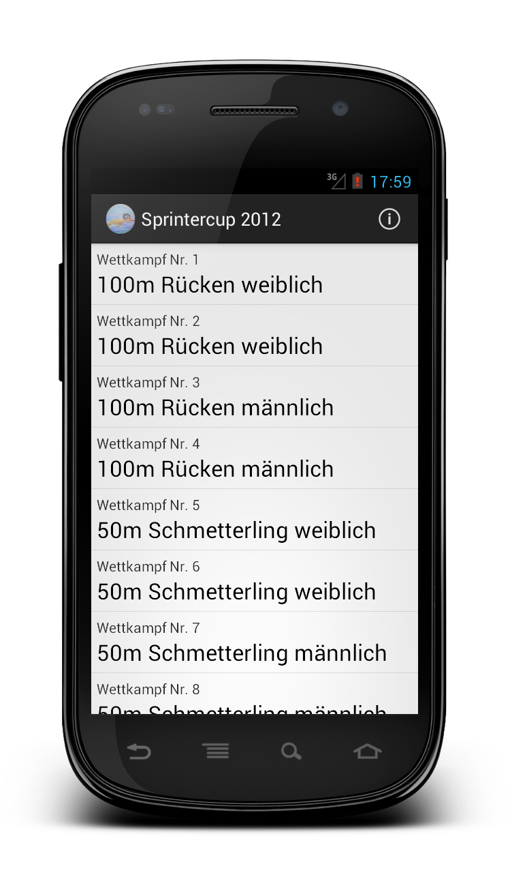
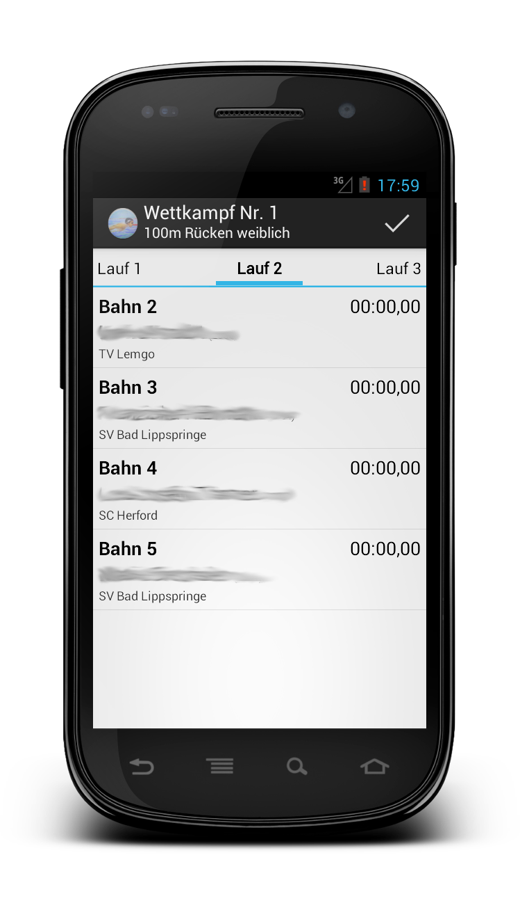
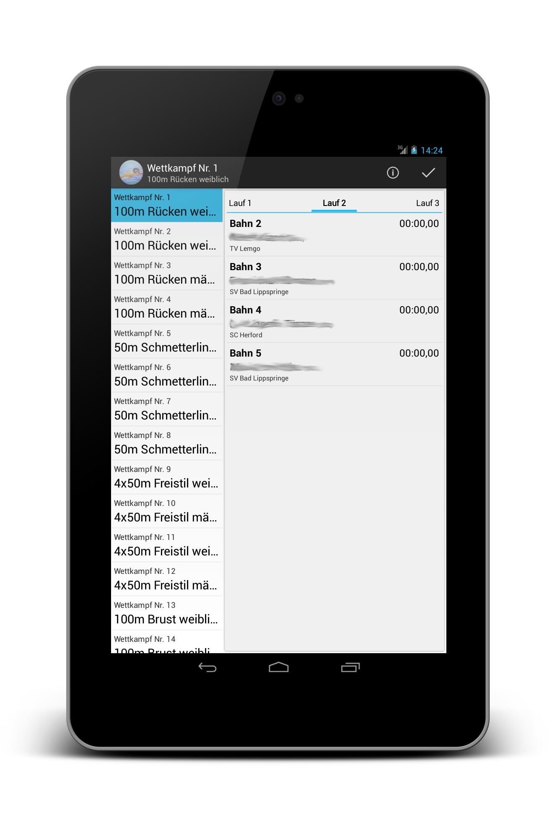
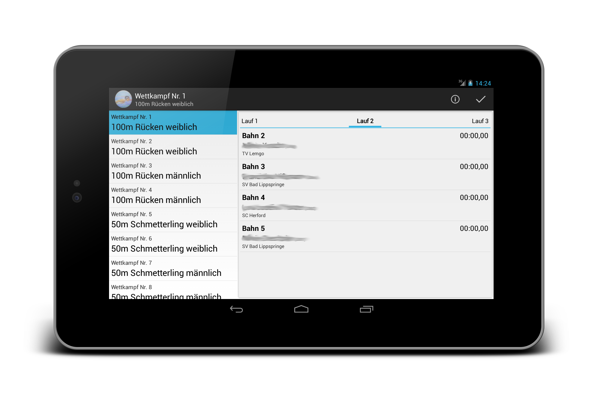

Sprintercup Companion App
Sprintercup Companion App for Android
The Sprintercup Companion App (SCC) provides you with the Meldeergebnis of the Sprintercup on your smartphone or tablet.
 


Download (Version 1.0.0) for Sprintercup 2013

Developer Information
This application uses the .csv file of a Meldeergebnis generated by easyWK. Therefore it is easy to use this app for any swimming competition that is administrated with easyWK by just providing the correct data file. Feel free to fork the code and provide and app for your own competition.
Support or Contact
If you have any problems or suggestions regarding the Sprintercup Companion App don't hesitate to contact me or file an issue.


Facebook, Twitter, GMail and Gaijm Icon taken from the Faenza Icon Theme by tiheum released under GPLv3
Google+ Icon by r4hamid released under CC BY-NC 3.0
License
Copyright 2012 - 2013 Frederik Hahne
This program is free software: you can redistribute it and/or modify
it under the terms of the GNU General Public License as published by
the Free Software Foundation, either version 3 of the License, or
(at your option) any later version.
This program is distributed in the hope that it will be useful,
but WITHOUT ANY WARRANTY; without even the implied warranty of
MERCHANTABILITY or FITNESS FOR A PARTICULAR PURPOSE. See the
GNU General Public License for more details.
You should have received a copy of the GNU General Public License
along with this program. If not, see http://www.gnu.org/licenses/.